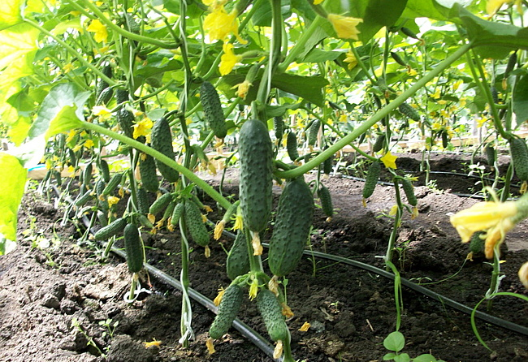

Каталог
Все про огурцы

Как выращивать огурцы – пошаговая инструкция для начинающих:
Выращивание огурцов в открытом грунте имеет свои особенности. Если вы хотите получить хороший урожай, следуйте нашим советам.
Грядка для огурцов.
Начать подготовку грядки нужно еще осенью. Почву перекапывают на глубину до 30 см и вносят органические и фосфорно-калийные удобрения из расчета 5 кг на 1 кв.м. Если перед наступлением холодов подготовить грядку не удалось, сделать это можно и весной. Тогда при перекопке вносят перегной и компост, а также комплексные минеральные удобрения в соответствии с рекомендациями на упаковке.
Место для огурцов выбирают солнечное и защищенное от холодных северных ветров
Место для огурцов выбирают солнечное и защищенное от холодных северных ветров. Это очень теплолюбивые растения и в случае, если температура опускается ниже 10°С, огурцы полностью прекращают рост. Поэтому очень важно поместить их в комфортные условия.
Если вы хотите получить урожай огурцов на три недели раньше обычного, для них можно соорудить теплую грядку или грядку-короб. Такие конструкции точно смогут защитить растения от возвратных заморозков и других неблагоприятных климатических условий.
Подготовка семян.
Перед посадкой следует провести прогревание и замачивание семян. Процесс замачивания семян прост, его проводят примерно за 12 часов до посева. Немногим больше уйдет на прогревание. Для этого нужно подвесить семена в марлевом мешочке. Желательно подвешивать около батареи или в том помещении, где температура не опустится ниже 20°С. Прогревание необходимо для устойчивости растения к различным заболеваниям. Этот оказывает положительное влияние на качество урожая. Семена прорастают при температуре 12-13°С.
Посев семян в грунт.
Когда грядка готова, можно приступать к посеву. Сначала намечают ряды на расстоянии 65-75 см друг от друга. В каждом ряду на расстоянии 20 см делают лунки глубиной до 4 см. В каждую из них наливают воду и ждут, пока она впитается. После этого в лунки раскладывают семена, засыпают их почвой и немного утрамбовывают.
Чтобы почва испаряла меньше влаги и на ней не образовывалась корка, междурядья огуречной грядки мульчируют опилками или перегноем.
Сразу после посева семян грядку следует накрыть пленкой или спанбондом. Когда появятся первые всходы под ней, нужно установить дуги или другие опоры и уже на них расстелить укрывной материал, чтобы всходы не касались его.
Правильный уход за огурцами
Чтобы ваши огурцы радовали вас хорошим урожаем, соблюдайте несложные правила.
Правило 1. Грядки с огурцами всегда должны быть чистыми от сорняков.
Правило 2. На протяжении всего периода выращивания рыхлите почву в междурядьях.
Правило 3. По мере роста подвязывайте побеги к вертикальным опорам.
Правило 4. После образования 6-7 листка прищипните главный стебель – это стимулирует ветвление огурцов и увеличивает их урожайность.
Правило 5. На ночь обязательно накрывайте грядку пленкой или спанбондом (особенно пока растения еще молодые или ожидаются похолодания).
Правило 6. Регулярно собирайте урожай (не реже 2-3 раз в неделю). Это способствует образованию новых завязей.
Как поливать огурцы
Во время роста и развития, а также в период плодоношения огурцы нуждаются в огромном количестве воды (раз в 2-3 дня 0,5 л на молодое растение и 1 л воды на взрослое). Даже кратковременная засуха приводит к появлению горечи.
До начала цветения огурцы поливают каждые 5-7 дней, когда появляются первые соцветия – каждые 2-4 дня, во время плодоношения – каждые 3-4 дня.
Помните, что огурцы поливают теплой водой и льют не на само растение, а под корни или в междурядья. Огурцы не поливают из шланга проточной водой.
До начала цветения огурцы поливают каждые 5-7 дней
Если вода будет плохо впитываться, почву в нескольких местах можно проколоть вилами.
Это поможет воде проникнуть глубоко к корням и в то же время не нарушит корневую систему.
Как подкармливать огурцы
За весь период выращивания огурцы необходимо подкармливать 3-4 раза. Первую подкормку производят на стадии появления первых настоящих листов раствором 1 ст.л. нитрофоски и 1 ст. кашеобразного куриного помета на 10 л воды. Вторая подкормка проводится, когда появляется второй настоящий лист, раствором 1 ч.л. сульфата калия и 0,5 л коровяка на 10 л воды. На 1 кв.м. расходуется 4-6 л раствора. Третью подкормку производят по той же схеме спустя 15-17 дней. Стоит отметить, что внекорневая подкормка позволит растениям быстрее усваивать питательные вещества. Поэтому опрыскивание огурцов 5 г/л воды аммиачной селитры и раствора мочевины принесет большой эффект. Чтобы не обжечь листья, опрыскивания проводят вечером.
Сбор урожая огурцов
Период вегетации у огурцов зависит от сорта и спелости и составляет от 40 до 70 дней. Своевременная уборка значительно повышает плодоношение. При регулярном сборе урожая плоды имеют хороший внешний вид и отличный вкус, плодоношение продолжается длительное время.
Самый оптимальный интервал между сборами урожая – 3-4 дня. Если плоды растут на кустах очень долгое время, они перерастают, теряют свои вкусовые качества и желтеют. К тому же они истощают растение и не дают образовываться новым плодам.
Собирая урожай, важно не повредить огуречные плети. Лучше всего снимать плоды нажатием на плодоножку, при этом оставляя часть ее на огурце, дабы предотвратить повреждение плети.
Опытные огородники советуют собирать огурцы рано утром, пока плоды не успели нагреться, и сражу же уносить их в помещение, чтобы уберечь от солнечных лучей.
Необходимо собирать все плоды с плетей, особенно больные переросшие, потому как именно они приостанавливают рост и развитие других плодов, а также являются распространителями болезней.
Как собрать семена огурцов
Чтобы собрать семена, надо выбирать самые крепкие плоды. Это нужно для того, чтобы в будущем получить огурцы с хорошим набором генов.
Обозначение F1 на упаковке с семенами говорит о том, что перед вами гибрид первого поколения. Такие культуры получают путем скрещивания двух и более сортов.
Для сбора семян выбирают самые красивые огурцы с самых крепких кустов. Это необходимо, чтобы в следующем году получить огурцы с самым лучшим набором генов. Сбор семян производят только в тех кустов, которые дают самые вкусные плоды.
Огурцы, предназначенные для получения семян, оставляют висеть на кусте. Они должны раздуться, стать желтоватыми и даже немного бурыми – все это говорит и о том, что семена в них созрели.
Для сбора семян срывают перезревший огурец и оставляют его на солнце на несколько дней, до тех пор, пока он не станет совсем мягким. После этого его разрезают вдоль, ложкой достают семена и перекладывают их в какую-нибудь емкость.
Отделить семена от мякоти и удалить ингибиторов поможет сбраживание. Оно же замедлит прорастание. Проводят его следующим образом: семена нужно оставить семена в баночке с водой так, чтобы они свободно плавали, и закрыть банку марлей, чтобы не привлечь мелких насекомых. Через 2-3 дня сбраживание завершится, об этом будут свидетельствовать потонувшие семена. На более долгий срок оставлять семена в таком состоянии не стоит — они могут начать прорастать.
Хорошие семена огурцов осядут на дно, а пустые — всплывут.
Следующим этапом нужно удалить образовавшийся слой плесени, долить воды и встряхнуть банку – пустые семена вместе с мусором (шелухой) всплывут, а хорошие осядут на дне. В завершение положите семена в дуршлаг и промойте под проточной водой.
На последнем этапе подготовки семена высушивают и раскладывают в бумажные пакеты или тканевые мешочки. Высевать их следует не раньше, чем через 2-3 года – только тогда выращенные из них растения дадут максимально высокий урожай.
Следуйте описанным выше правилам, и тогда успех вам гарантирован.
Огурцы в мешках: секреты хорошего урожая
Если вы решили опробовать этот метод, то сначала нужно подготовить все необходимые материалы:
Плотные полиэтиленовые мешки объемом 70-125 литров – 2 шт.
Деревянная палка высотой 2 метра с вбитым в один ее конец гвоздем.
4 полые трубки небольшого диаметра – один конец трубок нужно герметично закрыть (например, пластилином) и по всей длине проделать в шахматном порядке отверстия. Эти трубки понадобятся для полива растений.
Скотч широкий.
Далее необходимо определиться с местом, где будут расти огурцы: лучше всего выбрать полутень, чтобы солнце не сожгло листья растений. Выкопать небольшую ямку по диаметру мешка – она необходима для устойчивости такой вертикальной грядки.
Взять полиэтиленовые мешки и вставить один в другой, чтобы «грядка» получилась более надежной. Затем начать заполнять мешок грунтом. Подойдет смесь торфа, перегноя, навоза, садовой земли – все, что есть на вашем участке. Старайтесь, чтобы в грунт не попадали острые веточки, которые легко могут порвать мешок.
Заполнив мешок до половины и установив его в выкопанную заранее ямку, нужно вбить по центру деревянный двухметровый кол. Именно к нему будут привязываться веревки, по которым и будут расти вверх огурчики.
На расстоянии около 10 см от деревянной палки надо разместить по кругу все 4 полые трубки, в которых были проделаны отверстия. Через эти трубки будет происходить полив огурцов и все подкормки.
Затем в мешок засыпается еще грунт, оставив сверху около 20 см пустого пространства. Край мешка подворачивается и делается бортик. Для прочности мешок оборачивается скотчем. Грядка готова для посадки огурчиков.
Подготовка семян
Выращивать огурцы в вертикальных грядках можно либо рассадой, либо непосредственно семенами. Семена лучше брать 2-3-летние – они дадут больше женских цветков, из которых формируются завязи. Если же у вас свежий посадочный материал прошлого урожая, то его нужно прогреть при температуре 60-65°C в течение 2-х часов. Или же положить огуречные семечки в тряпочный мешочек и подвесить возле теплой батареи на 1-2 месяца.
Перед проращиванием семена нужно отфильтровать: замочить в теплой воде или соляном растворе и удалить всплывшие семечки – они будут пустые.
Необходимая процедура – закаливание семян. Она проводится в 2 этапа:
Семена на сутки замачиваются в теплой воде около 25°C.
Спустя 24 часа контейнер с семенами убирают в холодильник на 3 суток.
После проведения всех этих подготовительных процедур семена проращивают обычным способом.
Огурцы: выращивание в мешках
В мешки, в зависимости от их объема, можно посадить 10-15 растений. Высаживать можно и рассаду, и пророщенные семена. Основное требование к рассаде – она должна быть крепкой и не переросшей, в стадии 3-х настоящих листьев.
Теперь о тонкостях посадки огурцов в мешки: сверху можно посадить 3-4 растения. А все остальные сажаются с боков грядки. Для этого в мешках делаются небольшие надрезы, куда и высаживается рассада или семена. Старайтесь делать надрезы равномерно по всей площади мешка и не очень близко друг к другу.
Полив и подкормка
Полив происходит через полые трубочки, которые были вставлены в мешок при формировании грядки. Можно пользоваться шлангом, которые помещают внутрь каждой трубочки. Такой полив очень удобен – земля будет хорошо увлажняться, и вода не будет попадать на листья растений. Поливать в умеренно жаркое лето такую грядку стоит раз в 2-3 дня.
Также через трубочки проводятся и подкормки. Только обратите внимание, что все удобрения должны быть в жидком виде, без попадания кусочков веток, травы и т.п., чтобы не забились выходные отверстия на трубках.
Несколько советов
Если хотите, чтобы такая грядка плодоносила до самой осени, сажайте в нее разные сорта огурцов: раннеспелые, среднеспелые и поздние.
Как только на растениях образуется 5-6 листьев, их нужно подвязывать. Для этого и пригодится воткнутый внутрь мешка длинный деревянный шест. К нему привязываются веревки, по которым и будут расти огурчики.
Такую грядку с успехом можно использовать и на балконе или лоджии, только установить ее надо в поддон и в особенно жаркие часы притенять, чтобы солнце не сожгло растения.
Если вы не боитесь экспериментировать, попробуйте такой способ выращивания огурцов. Кроме того, что он значительно экономит место на участке и дает урожай до самых заморозков, он значительно облегчает и уход за растениями. Не требуются прополки, рыхление, мульчирование почвы. Да и благодаря тому, что растения находятся в закрытой среде, они не подвержены вредителям, например, медведке, и различным заболеваниям, поражающим огурцы как в теплицах, так и в открытом грунте.
Почему желтеют завязи огурцов
1. Растения не пасынкуются
Нужно вовремя убирать всё, что пытается расти из пазух первых трех-пяти листьев, а все пасынки, которые образуются выше, прищипывать над вторым листом. Многие садоводы боятся пасынкования, ошибочно считая, что эта процедура снизит урожай. Тем не менее, делать это надо обязательно и безжалостно. Пасынки, которые будут расти из пазух уже не в основной плети, а из пазух пасынков, т. е. так называемые побеги второго порядка, нужно прищипывать уже после первого листа.
2. Растения посажены слишком густо
Им не хватает площади питания, поэтому они не могут выкормить свои многочисленные завязи. Вот эти то лишние завязи как раз и засыхают. И нужно обязательно учитывать рекомендации на пакетиках. Если написано, что на 1 м2 нужно высаживать 2,5 растения, значит так и нужно сажать, т. е. для 5 растений надо 2 м2 земли.
3. Хозяйка постоянно подкармливает свои огурцы навозом, и её растения растут, как на дрожжах - им тепло, влажно, сытно.
Но вот когда растения вступают в стадию плодоношения, их запросы меняются. Теперь им требуется не только азот и фосфор, но и повышенное фосфорное-калийное питание. Поэтому к подкормкам из настоя коровяка или травы надо добавлять стакан золы и ст. ложку суперфосфата. Или можно взять полное минеральное удобрение - азофоску, Кемиру, или растворин.
4. Часто высаживают не только партенокарпические сорта и гибриды, но и пчёлами опыляемые
У современных сортов цветы преимущественно женские и им необходимо подсаживать опылитель. А многие огородники этого не делают, или не знают.
5. Не нужно выращивать зеленцы до огромного «русского» размера, потому что при этом сдерживается рост последующих огурчиков.
И ещё вот что нужно знать. Растение всегда цветет «с запасом» на случай неблагоприятных условий, т. е. оно выдаёт больше завязей, чем может потом прокормить. Поэтому, когда все цветки опылятся, растение начинает сбрасывать лишние завязи. Таким образом, засыхание части завязей - процесс нормальный. Наша задача - помочь растению выкормить побольше потомства.
Выращивание огурцов в бочке.
Как же без огурца в деревне? Отвечаю: огурец обязателен! Но не на грядке, а в бочке. Минимум хлопот - максимум красоты и урожая. Через день почти по полному ведру собирать можно.
Конец весны - начало лета - как раз время для огуречного эксперимента. Вы готовы? Мои деревенские соседи тоже сначала ехидничали, потом смотрели и удивлялись, а сейчас сами так решили сделать.
Нужна бочка - без дна или сильно дырявая снизу. Контакт «внутренностей» нашей огуречной бочки с землей необходим - чтобы червячки заползали и помогали земле быть плодородной.
Предвижу возражения: нет у нас такой бочки с дыркой, все хорошие и все водой заняты. Давайте сделаем бочку. Я попробовала - ничего сложного. Для этого требуется метра три рубероида - отрезаем такой кусок. Нужны веревка, высокая палка - в полтора-два раза выше ширины рубероида - и несколько палок пониже. Выкапываем неглубокую - сантиметров десять - круглую ямку, сворачиваем рубероид в форму бочки и устанавливаем в ямку.
Верхний край временно фиксируем бельевыми прищепками, а изнутри по стенке вставляем палки - так формируем «бочку». В центре укрепляем высокую палку.
Чем заполнить? В моей импровизированной бочке - ветки, деревяшки, трава, бумага, старая обувь, тряпки, зола, кухонные пищевые отходы. Сверху слой земли - около десяти сантиметров и еще сантиметров десять свободных до края. Щедро поливаем водой. Берем веревку и обматываем вокруг рубероида, закрепляя приданную форму.
Огурцы сажаю прямо семенами.